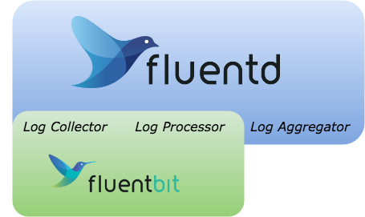
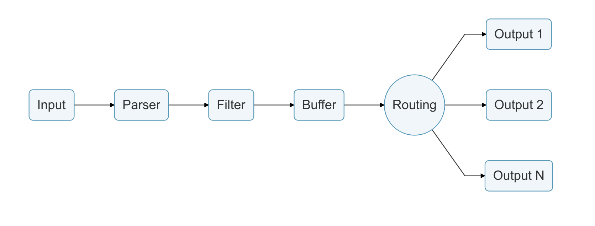

경량화 Log Processor & Forwarder : Fluent Bit

Fluent Bit v0.13을 기준으로 작성된 포스팅입니다. https://fluentbit.io
Log Collector
요즘은 오픈소스화된 다양한 플랫폼이 나오게 되면서 데이터 정보를 수집하기 위해 어려움이 발생합니다. 서로간의 정보의 출처도 다를뿐더러 다양한 데이터 포맷으로 전달해 오는 데이터를 처리해야만 하고 마지막으로 최종 목적지 또한 다를 수 있습니다.
이러한 요구를 만족시키기 위해 2011년 Fluentd라는 프로젝트가 탄생하게 됩니다. Ruby로 작성된 Fluentd는 여러 소스의 데이터를 집계하고 형식이 다른 데이터를 JSON 객체로 통합하여 다른 출력 대상으로 라우팅 할 수 있는 원 스톱 구성 요소인 통합 로깅 레이어로 작동하도록 개발되었습니다.
약 40MB의 메모리에서 실행이 되며, 초당 10,000 이벤트 이상을 처리할 수 있습니다.
이렇게 확산된 Fluentd가 현재는 Datadog에서 분석한 2018년 가장 많이 사용되는 Docker Image 순위에 4위로 랭크하게 됩니다. (2017년 8위 → 2018년 4위)

요즘은 기존의 ELK(Elastic Search + Logstash + Kibana)의 구조에서 EFK(Elastic Search + Fluentd + Kibana) 형태로도 널리 사용되는 추세입니다.
Fluentd & Fluent Bit?
Fluentd와 Fluent Bit 둘 모두 로그를 수집하고, 처리한 다음 전달해주는 역할을 수행합니다.

Fluentd와 비교하는 자료는 위와 같은 한 장의 그림으로 정리할 수 있습니다. Fluentd의 영역이 collector, processor, aggregator의 역할을 수행한다고 하면, Fluent Bit는 그중에 collector와 processor에 중점을 두었습니다.
아래는 Fluentd와 Fluent Bit를 비교한 표입니다.
| Fluentd | Fluent Bit | |
|---|---|---|
| Scope | Containers / Servers | Containers / Servers |
| Language | C & Ruby | C |
| Memory | ~40MB | ~450KB |
| Performance | High Performance | High Performance |
| Dependencies | Built as a Ruby Gem, it requires a certain number of gems. | Zero dependencies, unless some special plugin requires them. |
| Plugins | More than 650 plugins available | Around 35 plugins available |
| License | Apache License v2.0 | Apache License v2.0 |
Fluentd와 비교했을 때 차지하는 메모리가 1⁄100 정도로 경량화 되어 있는 것을 볼 수 있고, 플러그인 갯수에도 차이가 있습니다.
이 둘을 병행하여 사용하는 경우도 많이 볼 수 있습니다. 이럴 경우 주로 Fluent Bit는 로그를 전달자의 역할을 중점적으로 수행하도록 구성하고, Fluentd는 다양한 플러그인을 중심으로 aggregator의 역할을 수행하도록 구성합니다. 이렇게 하면 더 신뢰성 있는 솔루션을 제공할 수 있습니다.
Fluent Bit Work Flow

| Interface | Description |
|---|---|
| Input | 데이터의 진입점. Input Plugin을 통해 구현된 인터페이스는 데이터를 수집하거나 수신할 수 있게 합니다. 예) 로그 파일 컨텐츠, TCP 데이터, Metric등 |
| Parser | Input 인터페이스에서 수집한 비정형 데이터를 구조화된 데이터로 변환해주는 역할을 합니다. (입력 플러그인에 따라 다를 수 있습니다) |
| Filter | Input에서 수집한 데이터를 변경할 수 있습니다. |
| Buffer | Input된 데이터는 output으로 전달될 때까지 메모리에서 대기하고 있습니다. |
| Routing | 수집된 데이터는 각각 태깅을 수행하고, 태그된 규칙에 따라 라우팅을 수행합니다. |
| Output | 데이터의 목적지를 지정합니다. 지정된 목적지는 라우팅을 통해 전달됩니다. |
Input Plugins
입력 플러그인은 여러 소스에서 데이터를 받아오기 위해 제공되는 것으로 다양한 데이터에 따른 플러그인이 있습니다.
| name | title | description |
|---|---|---|
| cpu | CPU Usage | 시스템의 CPU 사용량을 측정합니다. |
| disk | Disk Usage | 디스크 I/O를 측정합니다. |
| dummy | Dummy | 더미 이벤트를 생성합니다. |
| exec | Exec | 외부 프로그램을 실행하고 이벤트 로그를 수집합니다. |
| forward | Forward | Fluentd로 전달할 수 있는 프로토콜입니다. |
| head | Head | 파일의 앞부분을 읽어서 처리합니다. |
| health | Health | TCP services의 상태를 확인합니다. |
| kmsg | Kernel Log Buffer | 리눅스 커널 로그 버퍼메시지를 읽습니다. |
| mem | Memory Usage | 메모리를 측정합니다. |
| mqtt | MQTT | TCP 접속을 통해 MQTT 제어 패킷의 메시지 / 데이터를 검색 할 수 있습니다. |
| netif | Network Traffic | 트래픽을 분석합니다. |
| proc | Process | 프로세스의 상태를 체크합니다. |
| random | Random | 랜덤 샘플을 생성합니다. |
| serial | Serial Interface | 직렬 인터페이스의 데이터를 읽습니다. |
| stdin | Standard Input | 표준 input 데이터를 읽습니다. |
| syslog | Syslog | Unix 소켓에서 syslog를 읽습니다. |
| systemd | Systemd | Systemd/Journald 로그를 읽습니다. |
| tail | Tail | 파일의 뒷부분을 읽어서 처리합니다. |
| tcp | TCP | TCP를 통해서 JSON 메시지를 읽습니다. |
Plugins
몇 가지의 Input 플러그인을 살펴 보겠습니다.
CPU
CPU 사용량을 측정하는 Input 플러그인입니다.- Config 설정 파일에 셋팅하는 방법
[INPUT] Name cpu Tag my_cpu [OUTPUT] Name stdout Match *- 명령줄로 실행하는 방법
fluent-bit -i cpu -t my_cpu -o stdout -m '*' Fluent-Bit v0.13.4 Copyright (C) Treasure Data [2018/07/23 08:19:40] [ info] [engine] started (pid=49) [0] my_cpu: [1532333981.000247881, {"cpu_p"=>1.250000, "user_p"=>0.500000, "system_p"=>0.750000, "cpu0.p_cpu"=>1.000000, "cpu0.p_user"=>0.000000, "cpu0.p_system"=>1.000000, "cpu1.p_cpu"=>0.000000, "cpu1.p_user"=>0.000000, "cpu1.p_system"=>0.000000, "cpu2.p_cpu"=>1.000000, "cpu2.p_user"=>1.000000, "cpu2.p_system"=>0.000000, "cpu3.p_cpu"=>2.000000, "cpu3.p_user"=>1.000000, "cpu3.p_system"=>1.000000}] [1] my_cpu: [1532333982.000199660, {"cpu_p"=>1.750000, "user_p"=>0.750000, "system_p"=>1.000000, "cpu0.p_cpu"=>3.000000, "cpu0.p_user"=>2.000000, "cpu0.p_system"=>1.000000, "cpu1.p_cpu"=>2.000000, "cpu1.p_user"=>1.000000, "cpu1.p_system"=>1.000000, "cpu2.p_cpu"=>2.000000, "cpu2.p_user"=>0.000000, "cpu2.p_system"=>2.000000, "cpu3.p_cpu"=>2.000000, "cpu3.p_user"=>1.000000, "cpu3.p_system"=>1.000000}] [2] my_cpu: [1532333983.000195037, {"cpu_p"=>1.250000, "user_p"=>0.750000, "system_p"=>0.500000, "cpu0.p_cpu"=>1.000000, "cpu0.p_user"=>0.000000, "cpu0.p_system"=>1.000000, "cpu1.p_cpu"=>1.000000, "cpu1.p_user"=>0.000000, "cpu1.p_system"=>1.000000, "cpu2.p_cpu"=>0.000000, "cpu2.p_user"=>0.000000, "cpu2.p_system"=>0.000000, "cpu3.p_cpu"=>2.000000, "cpu3.p_user"=>2.000000, "cpu3.p_system"=>0.000000}] [3] my_cpu: [1532333984.000164192, {"cpu_p"=>3.000000, "user_p"=>1.500000, "system_p"=>1.500000, "cpu0.p_cpu"=>3.000000, "cpu0.p_user"=>1.000000, "cpu0.p_system"=>2.000000, "cpu1.p_cpu"=>3.000000, "cpu1.p_user"=>2.000000, "cpu1.p_system"=>1.000000, "cpu2.p_cpu"=>2.000000, "cpu2.p_user"=>1.000000, "cpu2.p_system"=>1.000000, "cpu3.p_cpu"=>4.000000, "cpu3.p_user"=>2.000000, "cpu3.p_system"=>2.000000}]위에서 나오는 결과는 아래 표에서 정의하는 내용을 출력합니다.
Key 설명 Node cpu_p 전체 시스템 CPU 사용량. 사용자 + 시스템 값 cpuN.p_cpu 코어 N의 전체 CPU 사용량 user_p 사용자의 CPU 사용량 cpuN.p_user 코어 N의 사용자의 CPU 사용량 system_p 커널(시스템) 모드의 CPU 사용량 cpuN.p_system 코어 N의 커널(시스템)의 CPU 사용량 해당 정보는 1초 단위로 수집되고 5초 단위로 출력에 전달합니다.
Tail
Tail 플러그인은 한 개 이상의 텍스트 파일을 모니터링 할 수 있습니다. 실제 리눅스 쉘에서 tail -f 명령과 비슷한 동작을 합니다.
conf 파일에 설정하는 방법은 다음과 같습니다.# input-custom.conf [INPUT] Name tail Tag logs-from-fluentbit.* Path /var/logs/spring-boot-logging.log Parser spring-file-log DB /var/log/flb_kube.db Mem_Buf_Limit 5MB Skip_Long_Lines On Refresh_Interval 10Parser
구조화 되지 않은 데이터를 구조화된 데이터로 변환해주는 부분입니다. Input에서 들어온 데이터를 분석하여 구문에 맞게 구조화 해줍니다. 여러개의 파서를 정의하여 선택적으로 사용할 수 있습니다.
공식 홈페이지에서 제공하는 샘플 parser들은 다음과 같습니다.(fluent-bit-configmap.yaml)
[PARSER] Name apache Format regex Regex ^(?<host>[^ ]*) [^ ]* (?<user>[^ ]*) \[(?<time>[^\]]*)\] "(?<method>\S+)(?: +(?<path>[^\"]*?)(?: +\S*)?)?" (?<code>[^ ]*) (?<size>[^ ]*)(?: "(?<referer>[^\"]*)" "(?<agent>[^\"]*)")?$ Time_Key time Time_Format %d/%b/%Y:%H:%M:%S %z [PARSER] Name apache2 Format regex Regex ^(?<host>[^ ]*) [^ ]* (?<user>[^ ]*) \[(?<time>[^\]]*)\] "(?<method>\S+)(?: +(?<path>[^ ]*) +\S*)?" (?<code>[^ ]*) (?<size>[^ ]*)(?: "(?<referer>[^\"]*)" "(?<agent>[^\"]*)")?$ Time_Key time Time_Format %d/%b/%Y:%H:%M:%S %z [PARSER] Name apache_error Format regex Regex ^\[[^ ]* (?<time>[^\]]*)\] \[(?<level>[^\]]*)\](?: \[pid (?<pid>[^\]]*)\])?( \[client (?<client>[^\]]*)\])? (?<message>.*)$ [PARSER] Name nginx Format regex Regex ^(?<remote>[^ ]*) (?<host>[^ ]*) (?<user>[^ ]*) \[(?<time>[^\]]*)\] "(?<method>\S+)(?: +(?<path>[^\"]*?)(?: +\S*)?)?" (?<code>[^ ]*) (?<size>[^ ]*)(?: "(?<referer>[^\"]*)" "(?<agent>[^\"]*)")?$ Time_Key time Time_Format %d/%b/%Y:%H:%M:%S %z [PARSER] Name json Format json Time_Key time Time_Format %d/%b/%Y:%H:%M:%S %z [PARSER] Name docker Format json Time_Key time Time_Format %Y-%m-%dT%H:%M:%S.%L Time_Keep On # Command | Decoder | Field | Optional Action # =============|==================|================= Decode_Field_As escaped log [PARSER] Name syslog Format regex Regex ^\<(?<pri>[0-9]+)\>(?<time>[^ ]* {1,2}[^ ]* [^ ]*) (?<host>[^ ]*) (?<ident>[a-zA-Z0-9_\/\.\-]*)(?:\[(?<pid>[0-9]+)\])?(?:[^\:]*\:)? *(?<message>.*)$ Time_Key time Time_Format %b %d %H:%M:%S
설정된 Parser를 Input에 넣어줍니다.
[INPUT]
Name tail
...
Parser apache #parser 선택
...
Refresh_Interval 10Fluentd 정규식을 테스트해보고 결과를 바로 가져올 수 있는 사이트 : http://fluentular.herokuapp.com/
Filter
필터 플러그인을 사용하면 입력 플러그인에서 생성된 수신 데이터를 변경할 수 있습니다.
| name | title | description |
|---|---|---|
| grep | Grep | 패턴 매칭하여 특정 레코드만 포함하거나 제거하는 필터링을 수행합니다. |
| kubernetes | Kubernetes | Fluent Bit이 Kubernetes에 노드의 Demonset 형태로 배포되면 각 컨테이너의 정보를 가져오는 필터로 작용합니다. |
| parser | Parser | Parse 필터는 Input으로 들어오는 데이터를 특정 구문에서 필드로 구분할 수 있게 해줍니다. |
| record_modifier | Record Modifier | 특정 필드를 추가하거나 제거할 수 있습니다. |
| stdout | Stdout | 입력에서 받은 데이터를 표준 출력으로 전달할 수 있게 해줍니다. |
| throttle | Throttle | 이벤트 속도 제한을 적용해줍니다. |
| nest | Nest | 지정된 키 아래 레코드를 Nest 구조로 구성해줄 수 있습니다. |
| modify | Modify | 레코드를 수정할 수 있습니다. |
Routing
라우팅은 필터를 통해 데이터를 라우팅하고 마지막으로 하나 이상의 대상으로 라우팅 할 수 있게 해주는 핵심 기능입니다 .
아래는 OUTPUT으로 해당 라우팅을 수행하는 방법입니다.
[INPUT]
Name cpu
Tag my_cpu
[INPUT]
Name mem
Tag my_mem
[OUTPUT]
Name es
Match my_cpu
[OUTPUT]
Name stdout
Match my_mem라우팅에서 중요한 것은 Tag와 Match입니다.
Tag는 Input에서 들어오는 데이터를 구분하기 위한 꼬리표이고, Match는 라우팅 규칙을 통해 Output을 전달하는 역할을 수행합니다.
지정된 태그를 아래와 같이 wild card로 지정할 수도 있습니다.
[INPUT]
Name cpu
Tag my_cpu
[INPUT]
Name mem
Tag my_mem
[OUTPUT]
Name stdout
Match my_*Output
출력 인터페이스를 사용하여 데이터의 대상을 정의 할 수 있습니다. 이것은 원격 서비스, 로컬 파일 시스템 또는 다른 시스템의 표준 인터페이스입니다.
Fluent Bit에서 사용할 수 있는 Output Plugin은 다음과 같습니다.
| name | title | description |
|---|---|---|
| azure | Azure Log Analytics | Azure Log Analytics에 전달합니다. |
| counter | Count Records | 레코드의 갯수를 측정하는 간단한 플러그인입니다. |
| es | Elasticsearch | Elasticsearch 서버로 전달합니다. |
| file | File | 파일형태로 전달합니다. |
| flowcounter | FlowCounter | 레코드의 크기와 갯수를 셀 수 있는 플러그인입니다. |
| forward | Forward | Fluentd 로 전달합니다. |
| http | HTTP | 특정 HTTP 엔드포인트로 전달합니다. (POST) |
| influxdb | InfluxDB | 시계열 DB인 InfluxDB로 전달합니다. |
| Kafka | Apache Kafka | Apache Kafka로 전달합니다. |
| kafka-rest | Kafka REST Proxy | Kafka REST Proxy 서버로 전달합니다. |
| stdout | Standard Output | 표준 Output으로 전달합니다. |
| splunk | Splunk | Splunk Enterprise로 전달합니다. |
| td | Treasure Data | 분석을 위해 Treasure Data cloud service 로 전달합니다. |
| nats | NATS | NATS 서버로 전달합니다. |
| null | NULL | 이벤트를 전달하지 않습니다. |
Fluent Bit in Kubernetes
Fluent Bit을 Kubernetes에서 활용하는 예제는 다음 포스팅 글을 참고하시길 바랍니다. Logging in Kubernetes